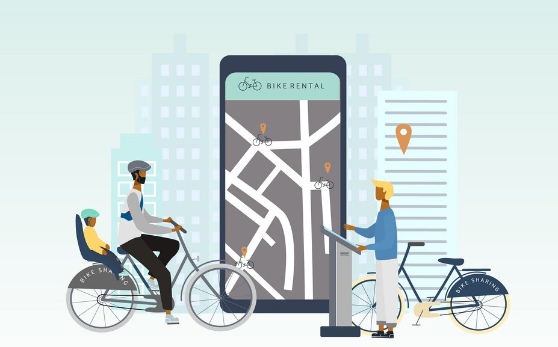

💰ğŸ›ï¸ğŸ“Š Reduce costs and increase revenue with OList E-commerce Inventory Management! 📈🔠Using Pareto analysis and market basket analysis, we identify top-performing products and customer purchase behavior to optimize inventory and prioritize profitable categories. 📉💡 Our recommendations include focusing on top-performing products, creating product bundles, and removing slow-moving items from categories. 💪

📈🔍📱 This project utilizes web and social media analytics to provide insights to a US-based mobile phone manufacturer. 🌐💻 By analyzing data from social media platforms and review sites, the project helps develop effective marketing strategies and optimize product development. 💪🚀 The goal is to increase market share and brand value, making use of visually appealing charts and graphs to present the results. 🧠📊

🔍📄 Traditional manual resume screening is time-consuming and prone to biases. But, 🤖 machine learning models can automate the process, leading to a more efficient and objective screening process. In this project, we preprocess the data to extract relevant features, analyze it using various ML techniques, and build models to predict the category of each resume based on job requirements. The models are evaluated using performance metrics, and the insights are used to improve the screening process. 📈💡👨‍💻

Multiple linear regression 📈 was performed on the Boombikes bike rental dataset to find the number of rentals issued 🚴 based on various independent values such as temperature 🌡ï¸, weather 🌤ï¸, and holidays ğŸ–ï¸. The R-squared value suggests a good model, with temperature 🌡ï¸, light rain ☔, and year 📅 being the top predictor variables. Recommendations include increasing bike availability 🚲 and promotions 🉠during the summer months.

ğŸ”📈 The Lead Score Analysis for X Education 📠helps to increase enrollment by identifying the most influential factors in converting potential customers into registered students. By analyzing data on site visits, time spent on the site, lead origin, notable activity, and more, the analysis provides actionable insights that can be used to optimize the website and increase conversions. Recommendations include improving the UI/UX, offering discounts 💰, and prioritizing the key variables identified in the analysis.

📈💻 In this project, I worked with the Instagram product team to provide insights on user behavior and engagement through SQL fundamentals. 🔍👥 I analyzed user data to help the marketing team with campaigns, such as identifying loyal and inactive users and suggesting commonly used hashtags. 💡📊 Additionally, I provided investor metrics on user engagement and identified fake accounts on the platform.

🎥🌍 In this project, I analyzed data from RSVP Movies, an Indian film production company, to provide meaningful insights for their upcoming global movie release in 2022. By analyzing data on past movie releases, I was able to make recommendations and help the company plan their project analytically. This project gave me valuable experience in data analysis and the opportunity to contribute to the success of a major film production company.

📊🏏 It is an interactive Tableau dashboard to showcase IPL statistics from 2008 to 2017. used two datasets, 'matches.csv' and 'deliveries.csv', to create visualizations for match, player, and team statistics. The dashboard included subcategories such as toss outcome vs match outcome, biggest wins, highest totals, orange and purple cap contenders, and team performance. The end goal is to provide important insights and statistics for an infographic that will be used in a newsletter. 📈👨‍💻
🚗📊 The UK road accident dashboard, built with Tableau, provides users with a detailed overview of road accidents in the country. The interactive visualizations enable users to explore the data based on accident severity, region, and road type, as well as track patterns by year. 💻🔍
🌎📊 An interactive Tableau dashboard for COVID-19 cases worldwide with visualizations and insights on death and infection rates. It also displays data based on geographical areas.
🧠📈 This project builds a machine learning model to predict stroke likelihood based on risk factors like age, hypertension, and smoking status. We used Python 🐍, Scikit-learn, and several algorithms to build the model and evaluated its accuracy using performance metrics. Our model can help healthcare professionals identify high-risk patients and prevent strokes. 💪🏥

💼📈 A consumer finance company wants to identify loan default patterns through EDA to make informed decisions and reduce financial risks. 🔍📊 We will analyze data and identify strong indicators of default to understand driving factors and utilize this knowledge for risk assessment. 💻🤔 Research on risk analytics will help us make data-driven decisions to ensure applicants capable of repaying the loan are not rejected.